匈牙利葡萄酒最全介绍
2020/11/6 19:35:00
详细介绍
匈牙利的葡萄酒世界闻名，按产地分为七大区域，分别为：肖普朗区域，巴拉顿湖区域，多瑙河区域，上匈牙利区域，上潘诺尼亚区域，潘诺尼亚区域，托卡伊区域。
3巴拉顿博格拉尔（巴拉顿博格拉尔酒区域）
扎拉（扎拉酒区）
4巴拉顿高地（巴拉顿高地酒区）
5巴拉顿菲赖德-乔保克（巴拉顿菲赖德-乔保克酒区）
6纳吉-索姆洛（纳吉-索姆洛酒区）
7扎拉（扎拉葡萄酒产区）
8豪约什-巴哈（豪约什-巴哈酒区域）
9 昆萨格（昆萨格酒区域）
10松格拉德葡萄酒产区
11比克（比克葡萄酒产区）
12埃格尔（埃格尔葡萄酒产区）
13马特拉 （马特拉葡萄酒产区）
14 埃泰克-布达（埃泰克-布达酒区域）
15 摩尔（摩尔酒区域）
16潘诺恩哈尔姆（潘诺恩哈尔姆酒区域）
17 阿萨尔•内斯麦利葡萄酒产区
18佩奇（佩奇酒区域）
19塞克斯扎德（塞克斯扎德酒区域）
20 托尔纳（托尔纳酒区域）
21维拉尼（维拉尼酒区域）
22托卡伊（托卡伊葡萄酒产区）
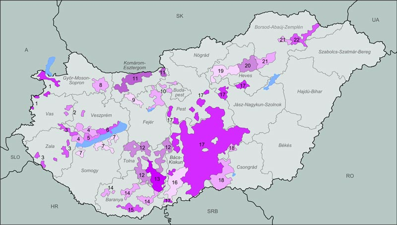
1肖普朗葡萄酒产区
巴拉顿湖区域由六个葡萄酒产区组成巴达索尼，巴拉顿博格拉尔，巴拉顿高地葡萄酒产区，巴拉顿菲赖德- 乔帕克，纳吉索姆洛和砸落。它的葡萄酒产区围绕巴拉顿湖。葡萄酒生产的起源可以追溯到1世纪初的罗马人。整个巴拉顿葡萄酒产区的特点是部分继承了具有2000年历史的罗马葡萄栽培传统。
迄今为止，已经三度获得年度最佳葡萄酒生产商奖。
在土耳其占领之前，得益于葡萄园，该地区是最富有的县之一。传统的农民的种植，形成了特殊的葡萄酒酝酿技术。蓬勃发展的葡萄酒文化在本尼迪克特庄园和蒂豪尼的前费斯特蒂庄园上发展起来。
总面积：5200公顷，种植葡萄的面积为1508公顷。整个葡萄酒产区是巴拉顿高地国家公园的一部分。
该地区的定居点自古以来就以优质的葡萄酒而闻名，在阿尔巴代王朝统治期间获得了重大特权。皇家法院在巴拉顿高地的7个卡尔村设有一个单独的葡萄种植区，并免居民所有税款，以换取皇家对葡萄酒控制权，直到1341年。1300年代，维斯普雷姆教区在该地区建立了广泛的葡萄园。随后的几个世纪中，皇家，贵族和贵族酒庄和葡萄园的葡萄酒获得了很高的声誉，并且在中世纪已出口到德国。最大的葡萄园属于埃斯泰尔哈齐家族。
盆地中形成的特殊的小地中海气候是由于火山锥的南部斜坡迅速升温，附近的巴科尼保护它们免受来自北部的风和暴风雨，山区的玄武岩具有良好的保温能力，巴拉顿湖大水面可减少热量波动，这些共同的因素
所创造的微气候，是葡萄生长的理想之地，而火山的红色土壤和石头使它具有这里种植的葡萄酒的风味。罗马人还发现了蓝井的来源，春季的水成为拜占庭皇后西奥多拉皇后最喜欢的饮料，普罗布斯皇帝统治期间，该地区的葡萄酒被赋予了维也纳潘诺尼亚诺比利斯区独特的特色酒。
此地葡萄区的特征是基岩由中山形成的二，三叠纪岩石和第四纪碎屑覆盖层组成，土壤不易挥发，及用粘土覆盖的森林土壤。独特的土壤是红色的森林土壤，这可以追溯到氧化铁含量高的二叠纪砂岩的风化作用。葡萄酒产区的特点是钙，镁和钾含量高。
这个葡萄酒产区，来自两种不同景观的葡萄酒。乔帕克的葡萄酒更柔和淡淡，而巴拉顿菲赖德的葡萄酒则更饱满和浓郁。
带有粘质，石质的棕色森林土壤，位于黄土覆盖的沙质粘土沉积物中具有极好的保水能力，即使在夏季高温下，也能保持足够的水份。
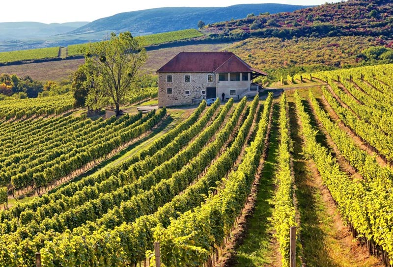
三多瑙河区域
多瑙河葡萄酒产区是最大的葡萄酒区域，它由三个具有相似特征的连续葡萄酒产区组成：豪约什-巴哈区域， 昆萨格区域和琼格拉德区域。它们主要位于低地地区。典型的土壤是沙子和黄土。它的气候非常有利于葡萄栽培，但极端天气却很常见。以淡沙酒闻名。
1970年冰酒在该地区酿造，其特点是当葡萄被霜冻伤后将其采摘，然后在冰冻状态下将其榨出。这里的葡萄栽培和酿酒品质始终是出色的。
它位于沙质的土壤大平原，土壤结构主要是沙土和黄土，是该国最大的葡萄酒产区。该地区面积27,903公顷，年收获约20万吨葡萄并用其酿制葡萄酒。生产的大部分白葡萄酒都是成分和谐的淡酒。
由于沙质土壤，19世纪末毁灭性的大规模根瘤疫病，未影响多瑙河-蒂萨地区。80-90％山区葡萄园已灭绝，但沙质葡萄园仍未受到影响。因此，它们的价值也增加了。葡萄酒产区的葡萄园成倍增加。
10松格拉德葡萄酒产区
松格拉德葡萄酒产区在1075年该产区就有书面记载。
它位于沙质的土壤大平原，土壤结构主要是沙土和黄土，钙质冲积土和石灰石砂，有着该国最古老的葡萄藤。15世纪，葡萄栽培已经发展成为一个独立的生产分支，在土耳其统治时期，除谷物外，最畅销的商品和最重要的税是葡萄酒。庄园的收入，酋长国和地主制革商的收入主要是葡萄酒的收入。16至17世纪的流行运动也将巴尔干和卡达尔卡的红酒文化引入这里。
18世纪，为了约束流沙，玛丽亚•特雷莎发布法令，敦促在大平原上种植葡萄以束缚流沙。
其多样的极端气候类似于昆萨格产区，但这里的年辐照量更高，平均每年2200小时，是该国最温暖的葡萄酒产区之一。蒂萨河和蒂萨河回水，科尔罗斯和马洛斯河对土壤的水供应，葡萄的生长和成熟创造了最佳的湿度条件。
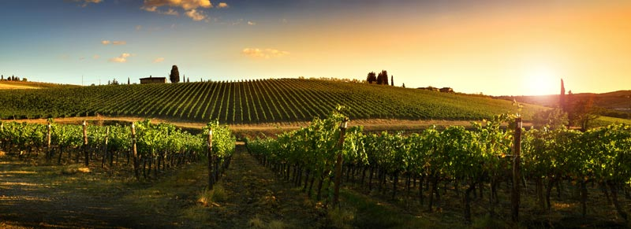
四上匈牙利区域：
上匈牙利区域包括三个葡萄酒产，比克葡萄酒产区，埃格尔葡萄酒产区和马特拉葡萄酒产区。它的地质是多样的：部分比克区域的岩溶山区，以及位于马特拉最高峰的是火山的起源。三个葡萄酒产区的品种结构相似，红色和白色品种均被种植。它最著名的葡萄酒是埃格尔公牛血统，埃格尔女孩，德布雷•林登（Debrőlinden）和意大利雷司令（Riesling）。
产区的葡萄栽培和文化可追溯到1000年，1004年圣伊斯特万一世创立的埃格尔主教对葡萄园种植和酿酒业起了重要作用，而瓦隆人带来的法国葡萄种植方式和木桶的使用方式，则极大的推动这一行业。16世纪，葡萄栽培及其酿造的葡萄酒贸易在农村地区已占主导地位。从出售葡萄酒中获得的收入非常可观。白葡萄种植的同时，红葡萄品种获得了越来越多的空间。 18和19世纪是埃格尔葡萄酒经济的鼎盛时期。埃格尔公牛血是该地区最著名的葡萄酒，它是通过将几种红葡萄的混合而成的葡萄酒。
13马特拉葡萄酒产区
马特拉葡萄酒产区是匈牙利22个葡萄酒产区第二大面积约为 7,815公顷，该地区有悠久的葡萄栽培传统。葡萄酒生产的第一个数据来自1301年的宪章。1608年马特拉向葡萄酒生产商颁发了许可证，可在全国各地免税出售自己的葡萄酒。由卡罗里庄园生产的白葡萄酒德布雷石叶的历史可以追溯到20世纪。它在19世纪上半叶享誉世界。
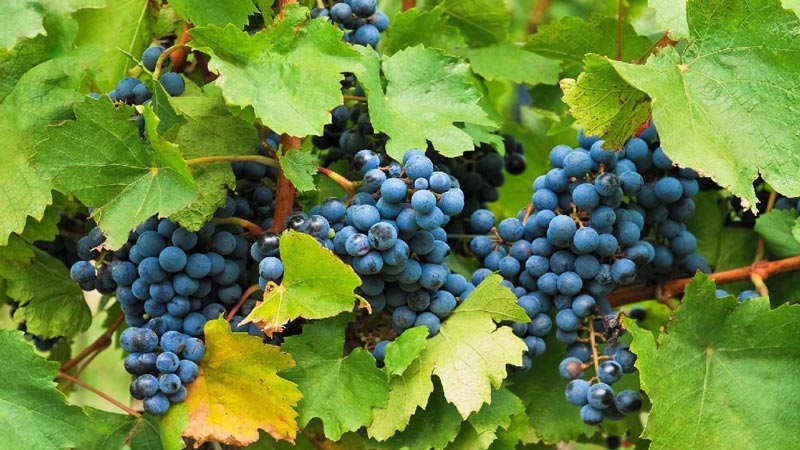
14埃泰克-布达葡萄酒产区
埃泰克-布达葡萄酒产区位于东部的北多瑙河葡萄酒产区，涵盖周围的布达葡萄园，总生产面积为5632公顷，葡萄园面积为1695公顷。与该地区的其他葡萄酒产区一样，白葡萄酒几乎都是在这里生产，通常采用还原技术。它的土壤通常形成在石灰岩，白云岩或砂岩基岩上。在阿尔帕德王朝统治时，葡萄栽培已经在这里蓬勃发展，并成为居民生活的主要来源。土耳其征服后，红酒的生产占主导地位。19世纪末开始，该地区还生产了佐力家族著名的香槟所需的白葡萄酒。
15摩尔葡萄酒产区
摩尔葡萄酒产区是匈牙利最小的葡萄酒产区之一。二战后，该国最好的葡萄园位于肖普朗葡萄酒产区和摩尔葡萄酒产区。产区通常是白葡萄酒，是一种硬的，迟熟的葡萄酒。据专家称，它的口味和质量都可以与托卡伊阿苏媲美 。同时摩尔葡萄酒的阳刚之气可以归因于其高酸度，碳酸含量高的葡萄酒，不会造成头痛或宿醉。
16潘诺恩哈尔姆葡萄酒产区
潘诺恩哈尔姆葡萄酒产区位于北部多瑙河，潘诺恩哈尔姆山偏东南的斜坡上，人工林面积为638公顷，黄土和棕色森林土壤，局部有沙斑，年平均温度约为10°C，一年的日照时间为2,000个小时，降水量中等，年降水约600-650毫米。葡萄栽培的传统历史与潘诺恩哈尔姆修道院息息相关。修道院的宪章提到过葡萄的栽培技术。1093年有88个葡萄园。种植园的繁荣，一直是此地重要的生计来源。19世纪下半叶的根瘤蚜流行病，破坏了80％的人工林后，意大利雷司令成为了产区的主要葡萄品种。1980年它成为一个独立的葡萄酒产区。
17阿萨尔•内斯麦利葡萄酒产区
阿萨尔•内斯麦利葡萄酒产区位于北部的多瑙河，面积1400公顷。黄土棕壤和石灰石，白云岩形成的形成泥灰棕壤，气候比全国平均气温凉爽，潮湿和多风，日照时数很长，外加150-300米的海拔，是最佳产区具备的特征。早在罗马时代该地区就有种植技术，在18世纪，这已成为主要的生产和出口之地，同时产区的葡萄酒通常是还原性的，干燥而活泼的酸性，这种高酸度也承受了更长的交货期。
潘诺尼亚葡萄酒产区由四个葡萄酒产区组成：佩奇，塞克斯扎德，托尔纳和维拉尼。它的土壤主要是黄土。葡萄酒生产的起源可以追溯到罗马人。他们也生产红葡萄酒和白葡萄酒，但重点是前者。赤霞珠和梅洛在国际上享有盛名。塞克斯扎德最著名的是塞克斯扎德的公牛血，维拉尼以其浓郁的波尔多风格红酒而闻名。
18佩奇葡萄酒产区
佩奇葡萄酒产区位于麦切克产区，面积823公顷，地中海气候，由于麦切克的保护作用，即使在440米海拔，也可种植葡萄。这种情况可以与托卡伊进行比较。它的表层土壤是沉积在各种火山岩基层上的黄土和潘诺尼亚沙上的棕色森林土壤。
自古代和中世纪以来就一直位于贸易路线的中心。麦切克周围的葡萄酒都在这里加工。18-19世纪更是鼎盛时期。葡萄酒变得越来越受欢迎，贸易也使城市居民受益。从本世纪中叶开始，这里生产佩奇香槟。佩奇希尔凡德里是当地真正的特色酒，它是19世纪从奥地利带来的。他们还试图制作此地的类似于托卡伊的晚收白葡萄酒，他们并不认为地中海南部的气候不利于形成阿苏。如今葡萄酒产区主要以小规模生产为特征。
19塞克斯扎德葡萄酒产区
塞克斯扎德葡萄酒产区它位于塞克斯扎德丘陵的最东端，葡萄栽培的区域面积为6,000公顷，其中葡萄种植面积为2,600公顷。
自3世纪以来，该地区就已开始种植葡萄。根据罗马皇帝马库斯•奥勒留•普罗布斯的命令，葡萄首先在该地区种植并制成葡萄酒。直到15世纪末，塞克斯扎德的白葡萄酒在匈牙利王国的领土上享有最大的声誉。土耳其人的入侵也从未影响和停止过葡萄酒的贸易。土耳其人本身也从葡萄酒生产和贸易的税收中受益，甚至还有葡萄园所有者。18世纪和19世纪，由于对葡萄酒的需求稳定增长，葡萄栽培涉及的面积显着增加。
产区较低的土壤层由潘诺尼粘土，黏土砂，潘诺尼沙和砂岩组成。大陆性气候的特点是阳光充足，浅色的黄土通过反光可帮助葡萄成熟，优良的气候确保了较长的生长期，这对晚熟的蓝葡萄品种，例如赤霞珠和法国品种尤为有利。由于土壤中的石灰含量低，因此可以生产低酸，易饮，醇厚，高酒精度的葡萄酒。在陡峭高度铰接的葡萄园的南部和东部斜坡上，生产最优质的葡萄酒。产区最著名的是通过混合几种葡萄而制成的塞克斯扎德公牛血。
20托尔纳葡萄酒产区
托尔纳葡萄酒产区位于匈牙利西南部，面积为2,900公顷，由黄土，黑钙土，棕色的森林土壤组成土壤结构，气候温暖湿润。葡萄园大多具有轻微的斜坡，朝南，并位于受保护的山坡上。产区的葡萄栽培的历史也可以追溯到罗马时代。在阿尔帕带时代建立的大量修道院中，有良好的种植葡萄园。
托尔纳葡萄酒是从葡萄园中挑选，以术语“精选收获”，“后期收获”和“特技葡萄”制成，只能手工收获。
21维兰尼葡萄酒产区
维兰尼葡萄酒产区是最南端的产区，种植面积为2100公顷，地中海气候，是匈牙利最温暖，最阳光的产区，黄土，红粘土和棕色森林土壤混合，沉积在维兰尼山的石灰石上的土壤，都是葡萄成熟的极好条件，也是成功实现葡萄酒产区的重要因素。18世纪斯瓦比亚人引入了葡萄牙品种，并设计了酒窖和酒窖路径。然后是凯夫兰科斯。在根瘤菌流行之后，出现了法国品种，赤霞珠法郎和长相思，梅洛和黑皮诺。他们以市场为导向的态度和世界品种的引进奠定了维兰尼的声誉。1987年，维尔兰尼被誉予葡萄与葡萄酒之城的荣誉称号。一年后，也成立了维兰尼酒卫队。它在匈牙利酿酒重生发挥了先锋作用，也是匈牙利最发达的葡萄酒产区之一。
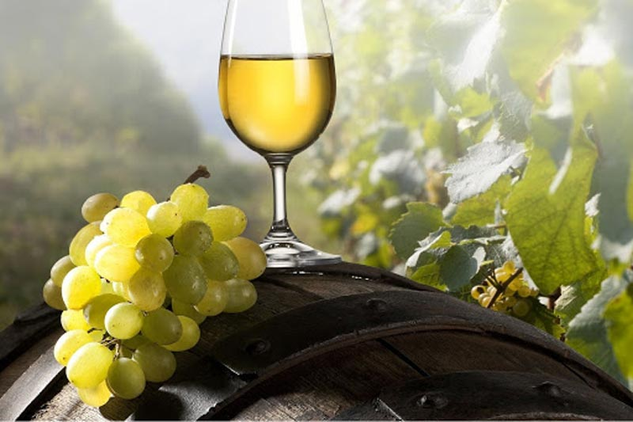
七 托卡伊区域
22托卡伊葡萄酒产区
路易十四品尝托卡伊葡萄酒时说，“国王之酒，酒中之王” 。
托卡伊葡萄酒产区位于匈牙利的东北部，占地面积88,124公顷，是匈牙利最著名的葡萄酒产区，因其世界声誉而成为匈牙利的标志。该市是几百年来葡萄酒传统，特殊建筑遗产和当地传统的守护者。葡萄栽培技术可追溯到征服前。马莱•加莱于1571年的继承书中提到阿苏葡萄，可以肯定加莱人酿造了第一个已知的阿苏葡萄酒。
产区是大陆性气候，大多数地方都含有火山岩及形成的淋巴土壤。火山岩中富含矿物质，可用于酿造出具有强酸主链和矿物风味的浓郁葡萄酒。在宽松的土壤的部分，由于较低的酸度，有利于葡萄酒较软的性格，这些葡萄园都比较适合种植多种香味品种。引起同化的灰葡萄孢霉菌是托卡伊-黑格利亚的特征。然而，风土，年份，河谷，周围河流的独特小气候和合适的葡萄品种，酒窖的特色即酒窖霉菌， 在确保托卡伊葡萄酒质量方面起着重要作用。通过其活性，可以使阿苏葡萄酒具有独特的味道，香气，香气和深金色。这种葡萄孢菌素在世界上只有这里和莱茵酒窖中可以找到。1737年起至今这是封闭的葡萄酒产区，也是世界上第一个封闭式的产区。
托卡伊葡萄酒产区已被指定为联合国教科文组织世界遗产。
七大区域又可细分为22个葡萄酒产区，分别为：
1肖普朗葡萄酒产区
2巴达索尼（巴达索尼酒区）3巴拉顿博格拉尔（巴拉顿博格拉尔酒区域）
扎拉（扎拉酒区）
4巴拉顿高地（巴拉顿高地酒区）
5巴拉顿菲赖德-乔保克（巴拉顿菲赖德-乔保克酒区）
6纳吉-索姆洛（纳吉-索姆洛酒区）
7扎拉（扎拉葡萄酒产区）
8豪约什-巴哈（豪约什-巴哈酒区域）
9 昆萨格（昆萨格酒区域）
10松格拉德葡萄酒产区
11比克（比克葡萄酒产区）
12埃格尔（埃格尔葡萄酒产区）
13马特拉 （马特拉葡萄酒产区）
14 埃泰克-布达（埃泰克-布达酒区域）
15 摩尔（摩尔酒区域）
16潘诺恩哈尔姆（潘诺恩哈尔姆酒区域）
17 阿萨尔•内斯麦利葡萄酒产区
18佩奇（佩奇酒区域）
19塞克斯扎德（塞克斯扎德酒区域）
20 托尔纳（托尔纳酒区域）
21维拉尼（维拉尼酒区域）
22托卡伊（托卡伊葡萄酒产区）
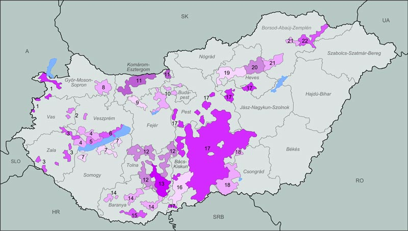
关于每个葡萄酒产区，都有一些有趣的事情：
1肖普朗葡萄酒产区
肖普朗葡萄酒产区是匈牙利历史悠久的葡萄酒产区之一。它位于阿尔卑斯山脚下，新锡德尔湖南岸和肖普朗山脉的山坡上。葡萄酒产区的总面积约为4,300公顷，其中约1,800公顷为葡萄。葡萄栽培的传统可以追溯到罗马时代。大部分红酒都是由蓝色佛朗哥葡萄品种酿造的。在葡萄酒产区也建立了许多国际品种。肖普朗葡萄酒通常是酒体中等，酒精度高，新鲜且具有良好的酸度。
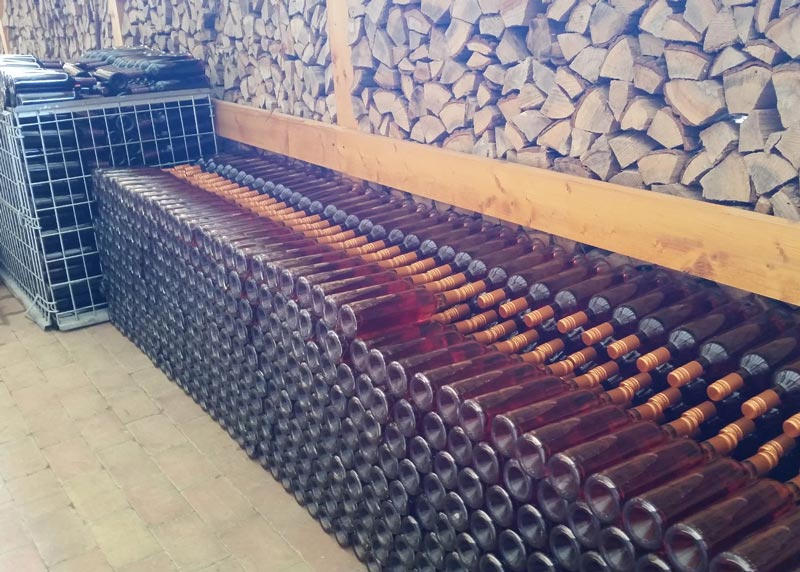
二 巴拉顿湖区域巴拉顿湖区域由六个葡萄酒产区组成巴达索尼，巴拉顿博格拉尔，巴拉顿高地葡萄酒产区，巴拉顿菲赖德- 乔帕克，纳吉索姆洛和砸落。它的葡萄酒产区围绕巴拉顿湖。葡萄酒生产的起源可以追溯到1世纪初的罗马人。整个巴拉顿葡萄酒产区的特点是部分继承了具有2000年历史的罗马葡萄栽培传统。
2巴达索尼葡萄酒产区
巴达索尼酒区位于多瑙河的中间，北岸西部的巴拉顿湖。自罗马时代起，巴达索尼产区就已经种植了葡萄，该地区的大型种植园以皇帝普罗布斯命名。由于土壤的特殊条件，法国种黑皮诺被转变成当地特色品种。从容易腐烂的火山岩和二叠纪砂岩的红色碎片覆盖层中释放出的微量元素，也为该葡萄酒产区独特的葡萄酒品质做出了贡献。气候温和，平衡，湿度高，外加南部的山坡还可以享受从湖面反射的阳光，因此形成了非常有利的微气候，这使得人们可以制作天然美味佳肴。巴达索尼•宇利姆的声誉与18-19世纪的托卡吉•阿苏相似。
3巴拉顿博格拉尔葡萄酒产区
巴拉顿博格拉尔葡萄酒产区也称南巴拉顿葡萄酒产区，是绍莫吉州唯一的葡萄酒区。葡萄酒产区3200公顷的葡萄园中，约有三分之二是白色，其余是蓝色葡萄。香槟的生产也是这一地区重要的经济。迄今为止，已经三度获得年度最佳葡萄酒生产商奖。
在土耳其占领之前，得益于葡萄园，该地区是最富有的县之一。传统的农民的种植，形成了特殊的葡萄酒酝酿技术。蓬勃发展的葡萄酒文化在本尼迪克特庄园和蒂豪尼的前费斯特蒂庄园上发展起来。
4巴拉顿高地葡萄酒产区
巴拉顿高地葡萄酒产区位于在中间的多瑙河，在北岸的中央西部的巴拉顿湖。它的土地并不统一，仅是相连的，因为巴达索尼葡萄酒产区被嵌入其中心部分。总面积：5200公顷，种植葡萄的面积为1508公顷。整个葡萄酒产区是巴拉顿高地国家公园的一部分。
该地区的定居点自古以来就以优质的葡萄酒而闻名，在阿尔巴代王朝统治期间获得了重大特权。皇家法院在巴拉顿高地的7个卡尔村设有一个单独的葡萄种植区，并免居民所有税款，以换取皇家对葡萄酒控制权，直到1341年。1300年代，维斯普雷姆教区在该地区建立了广泛的葡萄园。随后的几个世纪中，皇家，贵族和贵族酒庄和葡萄园的葡萄酒获得了很高的声誉，并且在中世纪已出口到德国。最大的葡萄园属于埃斯泰尔哈齐家族。
盆地中形成的特殊的小地中海气候是由于火山锥的南部斜坡迅速升温，附近的巴科尼保护它们免受来自北部的风和暴风雨，山区的玄武岩具有良好的保温能力，巴拉顿湖大水面可减少热量波动，这些共同的因素
所创造的微气候，是葡萄生长的理想之地，而火山的红色土壤和石头使它具有这里种植的葡萄酒的风味。罗马人还发现了蓝井的来源，春季的水成为拜占庭皇后西奥多拉皇后最喜欢的饮料，普罗布斯皇帝统治期间，该地区的葡萄酒被赋予了维也纳潘诺尼亚诺比利斯区独特的特色酒。
5巴拉顿菲赖德-乔帕克葡萄酒产区
巴拉顿菲赖德-乔帕克葡萄酒产区在巴拉顿湖北岸的盆地东部，约占地2150公顷。阿尔巴代王朝时期，重要的皇室和教会庄园遍布此地。1018年，圣史蒂芬一世向维斯普雷姆河谷修道院捐赠了巴拉顿菲赖德-乔保克葡萄园。此地葡萄区的特征是基岩由中山形成的二，三叠纪岩石和第四纪碎屑覆盖层组成，土壤不易挥发，及用粘土覆盖的森林土壤。独特的土壤是红色的森林土壤，这可以追溯到氧化铁含量高的二叠纪砂岩的风化作用。葡萄酒产区的特点是钙，镁和钾含量高。
这个葡萄酒产区，来自两种不同景观的葡萄酒。乔帕克的葡萄酒更柔和淡淡，而巴拉顿菲赖德的葡萄酒则更饱满和浓郁。
6纳吉索姆洛葡萄酒产区
纳吉-索姆洛葡萄酒产区是该国历史上最小的葡萄酒产区，位于西部脚的巴克尼山脉。索姆洛在罗马时代开始大量种植葡萄。1010年左右在托特纳建立的女修道院也是因葡萄园而闻名。相对温暖的气候，黑玄武岩的吸热特性利于葡萄的成熟。玄武岩均匀地散发白天吸收的热量。因此，葡萄不断地被热量包围，这对谷物的成熟有更好的作用。优质的土壤和丰富的矿物，玄武岩风化产生的热量均有助于索姆洛葡萄酒的独特性和品质。为了确保优质葡萄酒的生产和葡萄园的总体秩序和纪律于1752年引入了严格的原产地保护和质量保证法规。
7扎拉葡萄酒产区位于巴拉顿湖以西的扎拉县，产区总面积6383公顷。它拥有理想的葡萄种植气候，温度，降水分布和风势对于生产优质葡萄酒都是最佳的。
868年尚存的宪章证明了扎拉地区的葡萄栽培。1288年拉斯洛IV世发布的埃斯泰尔戈姆关税也包括扎拉葡萄酒。土耳其种植园之后，鲜食葡萄传播开来，后来在扎拉谷的葡萄栽培中发挥了重要作用。18-19世纪，在扎拉种植的红葡萄中意大利雷司令葡萄酒至今仍在产区占主导地位。带有粘质，石质的棕色森林土壤，位于黄土覆盖的沙质粘土沉积物中具有极好的保水能力，即使在夏季高温下，也能保持足够的水份。
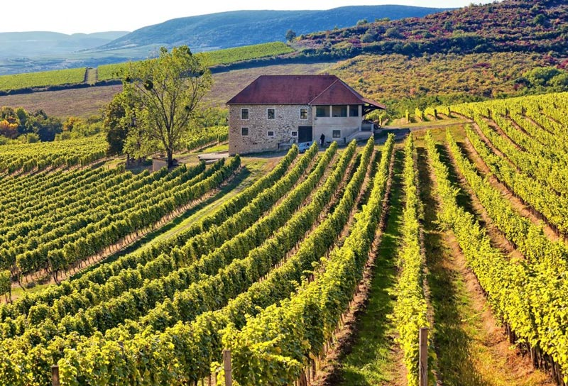
三多瑙河区域
多瑙河葡萄酒产区是最大的葡萄酒区域，它由三个具有相似特征的连续葡萄酒产区组成：豪约什-巴哈区域， 昆萨格区域和琼格拉德区域。它们主要位于低地地区。典型的土壤是沙子和黄土。它的气候非常有利于葡萄栽培，但极端天气却很常见。以淡沙酒闻名。
8豪约什-巴哈葡萄酒产区
豪约什-巴哈葡萄酒产区位于多瑙河左岸和蒂萨河之间，毗邻塞尔维亚，占地2066公顷，腐殖质沙的，粘质的或黄土的土壤特性。这种薄层覆盖沙土的质地最适合葡萄栽培。全国范围内，产区的日照时间以及月度和年度太阳辐射量均最高。白天的照明时间为每年4406.43小时，全年实际的晴天为2076小时。葡萄种植区每年的日照量平均每年1800-2070小时。这表明该葡萄酒产区的阳光最为丰富。这里还提供最适合成功种植的温度，降雨量和海拔高度。上个世纪，这里生产了全国最辣的国内葡萄酒。同样重要的是由意大利雷司令，科维卡和泥白葡萄酿制的葡萄酒。1970年冰酒在该地区酿造，其特点是当葡萄被霜冻伤后将其采摘，然后在冰冻状态下将其榨出。这里的葡萄栽培和酿酒品质始终是出色的。
9昆萨格葡萄酒产区
昆萨格葡萄酒产区在1075年该产区就有书面记载。它位于沙质的土壤大平原，土壤结构主要是沙土和黄土，是该国最大的葡萄酒产区。该地区面积27,903公顷，年收获约20万吨葡萄并用其酿制葡萄酒。生产的大部分白葡萄酒都是成分和谐的淡酒。
由于沙质土壤，19世纪末毁灭性的大规模根瘤疫病，未影响多瑙河-蒂萨地区。80-90％山区葡萄园已灭绝，但沙质葡萄园仍未受到影响。因此，它们的价值也增加了。葡萄酒产区的葡萄园成倍增加。
10松格拉德葡萄酒产区
松格拉德葡萄酒产区在1075年该产区就有书面记载。
它位于沙质的土壤大平原，土壤结构主要是沙土和黄土，钙质冲积土和石灰石砂，有着该国最古老的葡萄藤。15世纪，葡萄栽培已经发展成为一个独立的生产分支，在土耳其统治时期，除谷物外，最畅销的商品和最重要的税是葡萄酒。庄园的收入，酋长国和地主制革商的收入主要是葡萄酒的收入。16至17世纪的流行运动也将巴尔干和卡达尔卡的红酒文化引入这里。
18世纪，为了约束流沙，玛丽亚•特雷莎发布法令，敦促在大平原上种植葡萄以束缚流沙。
其多样的极端气候类似于昆萨格产区，但这里的年辐照量更高，平均每年2200小时，是该国最温暖的葡萄酒产区之一。蒂萨河和蒂萨河回水，科尔罗斯和马洛斯河对土壤的水供应，葡萄的生长和成熟创造了最佳的湿度条件。
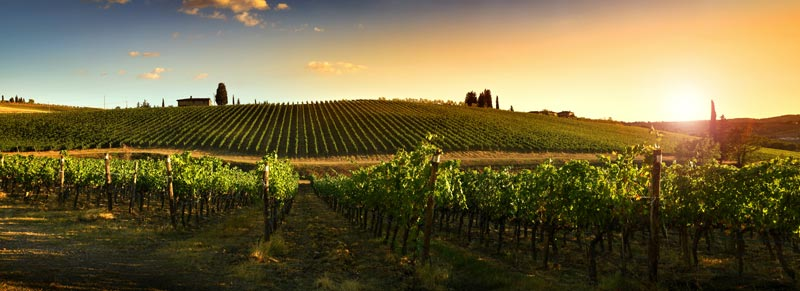
四上匈牙利区域：
上匈牙利区域包括三个葡萄酒产，比克葡萄酒产区，埃格尔葡萄酒产区和马特拉葡萄酒产区。它的地质是多样的：部分比克区域的岩溶山区，以及位于马特拉最高峰的是火山的起源。三个葡萄酒产区的品种结构相似，红色和白色品种均被种植。它最著名的葡萄酒是埃格尔公牛血统，埃格尔女孩，德布雷•林登（Debrőlinden）和意大利雷司令（Riesling）。
11比克葡萄酒产区
比克葡萄酒产区位于南部中央山脉的比克地区，1970年正式宣布为葡萄酒产区，葡萄园面积为1,750公顷。野生葡萄作为本地植物已经存在了数千年。葡萄栽培的书面记录最早出现于1503年。产区的土壤是流纹凝灰土黄土，黑色淋巴土壤，棕色土壤和粘土覆盖的森林土壤。它的气候充满阳光，但降雨少，平均温度低，主要有利于白葡萄酒的生产。16世纪，该地区主要生产起泡葡萄酒。
12埃格尔葡萄酒产区
埃格尔葡萄酒产区位于匈牙利的东北部，埃格尔-比克哈山的南坡上，总面积22,160公顷中约6,000公顷是葡萄园。产区土壤是基岩形成土壤沉积物，流纹岩覆盖的土壤，新世石灰岩，泥灰岩及渐新世粘土，泥灰岩，棕色森林土。这是葡萄绝好的生长土壤。产区的葡萄栽培和文化可追溯到1000年，1004年圣伊斯特万一世创立的埃格尔主教对葡萄园种植和酿酒业起了重要作用，而瓦隆人带来的法国葡萄种植方式和木桶的使用方式，则极大的推动这一行业。16世纪，葡萄栽培及其酿造的葡萄酒贸易在农村地区已占主导地位。从出售葡萄酒中获得的收入非常可观。白葡萄种植的同时，红葡萄品种获得了越来越多的空间。 18和19世纪是埃格尔葡萄酒经济的鼎盛时期。埃格尔公牛血是该地区最著名的葡萄酒，它是通过将几种红葡萄的混合而成的葡萄酒。
13马特拉葡萄酒产区
马特拉葡萄酒产区是匈牙利22个葡萄酒产区第二大面积约为 7,815公顷，该地区有悠久的葡萄栽培传统。葡萄酒生产的第一个数据来自1301年的宪章。1608年马特拉向葡萄酒生产商颁发了许可证，可在全国各地免税出售自己的葡萄酒。由卡罗里庄园生产的白葡萄酒德布雷石叶的历史可以追溯到20世纪。它在19世纪上半叶享誉世界。
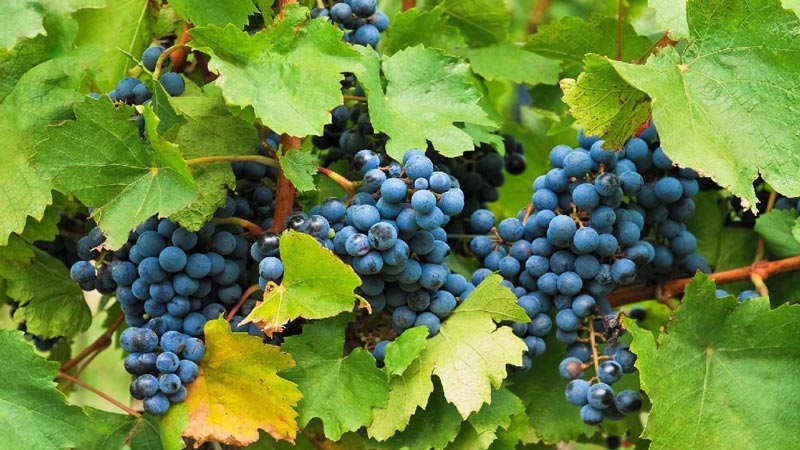
五上潘诺尼亚区域：
上潘诺尼亚区域包括四个葡萄酒产，埃泰克-布达葡萄酒产区，摩尔葡萄酒产区，内斯梅利葡萄酒产区，潘诺恩哈尔姆葡萄酒产区。14埃泰克-布达葡萄酒产区
埃泰克-布达葡萄酒产区位于东部的北多瑙河葡萄酒产区，涵盖周围的布达葡萄园，总生产面积为5632公顷，葡萄园面积为1695公顷。与该地区的其他葡萄酒产区一样，白葡萄酒几乎都是在这里生产，通常采用还原技术。它的土壤通常形成在石灰岩，白云岩或砂岩基岩上。在阿尔帕德王朝统治时，葡萄栽培已经在这里蓬勃发展，并成为居民生活的主要来源。土耳其征服后，红酒的生产占主导地位。19世纪末开始，该地区还生产了佐力家族著名的香槟所需的白葡萄酒。
15摩尔葡萄酒产区
摩尔葡萄酒产区是匈牙利最小的葡萄酒产区之一。二战后，该国最好的葡萄园位于肖普朗葡萄酒产区和摩尔葡萄酒产区。产区通常是白葡萄酒，是一种硬的，迟熟的葡萄酒。据专家称，它的口味和质量都可以与托卡伊阿苏媲美 。同时摩尔葡萄酒的阳刚之气可以归因于其高酸度，碳酸含量高的葡萄酒，不会造成头痛或宿醉。
16潘诺恩哈尔姆葡萄酒产区
潘诺恩哈尔姆葡萄酒产区位于北部多瑙河，潘诺恩哈尔姆山偏东南的斜坡上，人工林面积为638公顷，黄土和棕色森林土壤，局部有沙斑，年平均温度约为10°C，一年的日照时间为2,000个小时，降水量中等，年降水约600-650毫米。葡萄栽培的传统历史与潘诺恩哈尔姆修道院息息相关。修道院的宪章提到过葡萄的栽培技术。1093年有88个葡萄园。种植园的繁荣，一直是此地重要的生计来源。19世纪下半叶的根瘤蚜流行病，破坏了80％的人工林后，意大利雷司令成为了产区的主要葡萄品种。1980年它成为一个独立的葡萄酒产区。
17阿萨尔•内斯麦利葡萄酒产区
阿萨尔•内斯麦利葡萄酒产区位于北部的多瑙河，面积1400公顷。黄土棕壤和石灰石，白云岩形成的形成泥灰棕壤，气候比全国平均气温凉爽，潮湿和多风，日照时数很长，外加150-300米的海拔，是最佳产区具备的特征。早在罗马时代该地区就有种植技术，在18世纪，这已成为主要的生产和出口之地，同时产区的葡萄酒通常是还原性的，干燥而活泼的酸性，这种高酸度也承受了更长的交货期。
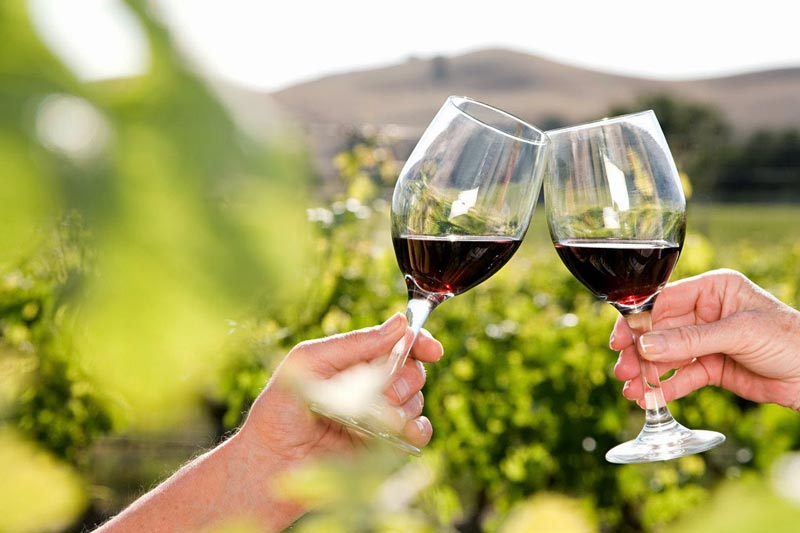
潘诺尼亚葡萄酒产区由四个葡萄酒产区组成：佩奇，塞克斯扎德，托尔纳和维拉尼。它的土壤主要是黄土。葡萄酒生产的起源可以追溯到罗马人。他们也生产红葡萄酒和白葡萄酒，但重点是前者。赤霞珠和梅洛在国际上享有盛名。塞克斯扎德最著名的是塞克斯扎德的公牛血，维拉尼以其浓郁的波尔多风格红酒而闻名。
18佩奇葡萄酒产区
佩奇葡萄酒产区位于麦切克产区，面积823公顷，地中海气候，由于麦切克的保护作用，即使在440米海拔，也可种植葡萄。这种情况可以与托卡伊进行比较。它的表层土壤是沉积在各种火山岩基层上的黄土和潘诺尼亚沙上的棕色森林土壤。
自古代和中世纪以来就一直位于贸易路线的中心。麦切克周围的葡萄酒都在这里加工。18-19世纪更是鼎盛时期。葡萄酒变得越来越受欢迎，贸易也使城市居民受益。从本世纪中叶开始，这里生产佩奇香槟。佩奇希尔凡德里是当地真正的特色酒，它是19世纪从奥地利带来的。他们还试图制作此地的类似于托卡伊的晚收白葡萄酒，他们并不认为地中海南部的气候不利于形成阿苏。如今葡萄酒产区主要以小规模生产为特征。
19塞克斯扎德葡萄酒产区
塞克斯扎德葡萄酒产区它位于塞克斯扎德丘陵的最东端，葡萄栽培的区域面积为6,000公顷，其中葡萄种植面积为2,600公顷。
自3世纪以来，该地区就已开始种植葡萄。根据罗马皇帝马库斯•奥勒留•普罗布斯的命令，葡萄首先在该地区种植并制成葡萄酒。直到15世纪末，塞克斯扎德的白葡萄酒在匈牙利王国的领土上享有最大的声誉。土耳其人的入侵也从未影响和停止过葡萄酒的贸易。土耳其人本身也从葡萄酒生产和贸易的税收中受益，甚至还有葡萄园所有者。18世纪和19世纪，由于对葡萄酒的需求稳定增长，葡萄栽培涉及的面积显着增加。
产区较低的土壤层由潘诺尼粘土，黏土砂，潘诺尼沙和砂岩组成。大陆性气候的特点是阳光充足，浅色的黄土通过反光可帮助葡萄成熟，优良的气候确保了较长的生长期，这对晚熟的蓝葡萄品种，例如赤霞珠和法国品种尤为有利。由于土壤中的石灰含量低，因此可以生产低酸，易饮，醇厚，高酒精度的葡萄酒。在陡峭高度铰接的葡萄园的南部和东部斜坡上，生产最优质的葡萄酒。产区最著名的是通过混合几种葡萄而制成的塞克斯扎德公牛血。
20托尔纳葡萄酒产区
托尔纳葡萄酒产区位于匈牙利西南部，面积为2,900公顷，由黄土，黑钙土，棕色的森林土壤组成土壤结构，气候温暖湿润。葡萄园大多具有轻微的斜坡，朝南，并位于受保护的山坡上。产区的葡萄栽培的历史也可以追溯到罗马时代。在阿尔帕带时代建立的大量修道院中，有良好的种植葡萄园。
托尔纳葡萄酒是从葡萄园中挑选，以术语“精选收获”，“后期收获”和“特技葡萄”制成，只能手工收获。
21维兰尼葡萄酒产区
维兰尼葡萄酒产区是最南端的产区，种植面积为2100公顷，地中海气候，是匈牙利最温暖，最阳光的产区，黄土，红粘土和棕色森林土壤混合，沉积在维兰尼山的石灰石上的土壤，都是葡萄成熟的极好条件，也是成功实现葡萄酒产区的重要因素。18世纪斯瓦比亚人引入了葡萄牙品种，并设计了酒窖和酒窖路径。然后是凯夫兰科斯。在根瘤菌流行之后，出现了法国品种，赤霞珠法郎和长相思，梅洛和黑皮诺。他们以市场为导向的态度和世界品种的引进奠定了维兰尼的声誉。1987年，维尔兰尼被誉予葡萄与葡萄酒之城的荣誉称号。一年后，也成立了维兰尼酒卫队。它在匈牙利酿酒重生发挥了先锋作用，也是匈牙利最发达的葡萄酒产区之一。
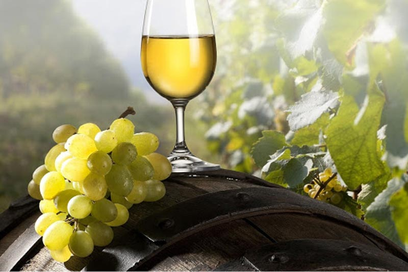
七 托卡伊区域
22托卡伊葡萄酒产区
路易十四品尝托卡伊葡萄酒时说，“国王之酒，酒中之王” 。
托卡伊葡萄酒产区位于匈牙利的东北部，占地面积88,124公顷，是匈牙利最著名的葡萄酒产区，因其世界声誉而成为匈牙利的标志。该市是几百年来葡萄酒传统，特殊建筑遗产和当地传统的守护者。葡萄栽培技术可追溯到征服前。马莱•加莱于1571年的继承书中提到阿苏葡萄，可以肯定加莱人酿造了第一个已知的阿苏葡萄酒。
产区是大陆性气候，大多数地方都含有火山岩及形成的淋巴土壤。火山岩中富含矿物质，可用于酿造出具有强酸主链和矿物风味的浓郁葡萄酒。在宽松的土壤的部分，由于较低的酸度，有利于葡萄酒较软的性格，这些葡萄园都比较适合种植多种香味品种。引起同化的灰葡萄孢霉菌是托卡伊-黑格利亚的特征。然而，风土，年份，河谷，周围河流的独特小气候和合适的葡萄品种，酒窖的特色即酒窖霉菌， 在确保托卡伊葡萄酒质量方面起着重要作用。通过其活性，可以使阿苏葡萄酒具有独特的味道，香气，香气和深金色。这种葡萄孢菌素在世界上只有这里和莱茵酒窖中可以找到。1737年起至今这是封闭的葡萄酒产区，也是世界上第一个封闭式的产区。
托卡伊葡萄酒产区已被指定为联合国教科文组织世界遗产。